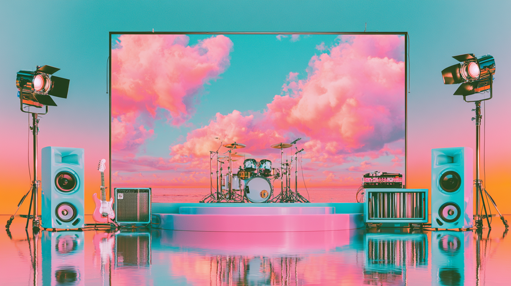
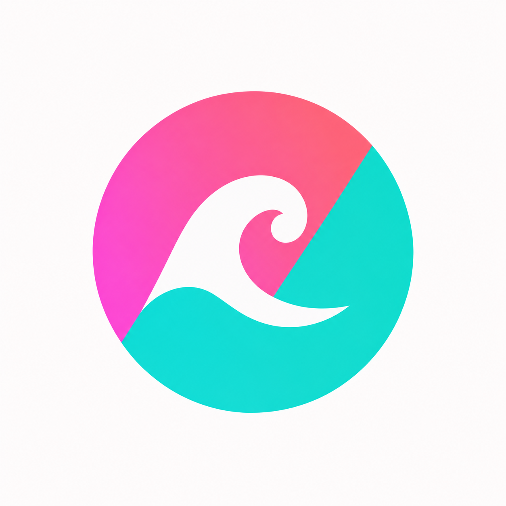

01 / BRING IT IN
Made anywhere.
All here.
Download from Midjourney. Generate locally. Tell your agent where the finished clips arrive, and have it bring them into a named bin.
Your original files stay where they are.


0.5YOUR FOOTAGE. YOUR SONG. YOUR EDIT.
FREE EARLY ACCESS / WINDOWSTHE WORKFLOW / 01—04
Made in Cadence. Shown with the Bossy project.
01 / BRING IT IN
Download from Midjourney. Generate locally. Tell your agent where the finished clips arrive, and have it bring them into a named bin.
Your original files stay where they are.
02 / REVIEW YOUR TAKES
Compare takes side by side. Rate a clip, leave a note, and save the range you want to use. Your agent can read your saved choices when you ask for the next batch.
The creative decisions stay with you.
03 / ADD YOUR SONG
Whisper turns your song into editable lyrics and timings, right on your computer. Review the words, adjust the timing, and choose how they appear in your video.
Whisper and its model are included in the download.
04 / MAKE THE CUT
Arrange your selects. Trim, layer, and fade. Bring the lyrics into the picture, then export your finished music video as an MP4.
Your footage, music, and lyrics in one timeline.
GETTING STARTED
YOU + YOUR AGENT + CADENCEYour agent handles the setup.
You bring the creative direction.
It reads the instructions and helps install Cadence on your computer.
Open File → Connect your agent in Cadence. Enable access and paste the connection instructions into your agent.
It asks where your clips arrive, which project they’re for, and what you want to bring in.
WHAT YOU’RE DOWNLOADING
CADENCE 0.5 / WINDOWS X64About 2.61 GB installed.
Plus room for your footage, previews, and exports.
Bins, ratings, notes, saved moments, timeline editing, layers, fades, lyrics, and MP4 export.
Automatic lyrics processed on your computer. No separate model download or transcription subscription. Singing can need corrections.
Private Python runtimes, video-processing tools, and the local agent connection. Existing installations stay untouched.
Windows 10 or newer · 64-bit · CPU transcription
Keep space for both the installer and installed app during setup.
FREE EARLY ACCESS / VERSION 0.5
Windows download coming with the public release.
The installer is built. The public download is not live yet.
This early-access installer is unsigned. Windows may show “Unknown publisher” or a SmartScreen warning. Only use the official release linked here, and have your agent verify the published file checksum. Some managed computers may block unsigned apps.
Generate footage with your existing tools, then bring the completed files into Cadence to review and edit. Cadence doesn’t include video-generation credits or an AI agent. You can also edit without connecting an agent.
The bundled Whisper engine processes your song locally on your CPU. Transcription speed depends on your computer. Your separate agent or generation service has its own data practices.
Python, Whisper, its model, and video-processing tools are included. Cadence uses Microsoft WebView2; setup reuses it if installed, or needs an internet connection to install it if missing.
Yes. Cadence 0.5 is free to use, including for commercial and client videos. Selling Cadence itself requires permission. Separate third-party license rights are preserved; notices and matching video-component sources are included.
Uninstalling removes the app. Projects are stored separately and retained, and your original footage stays where you keep it.